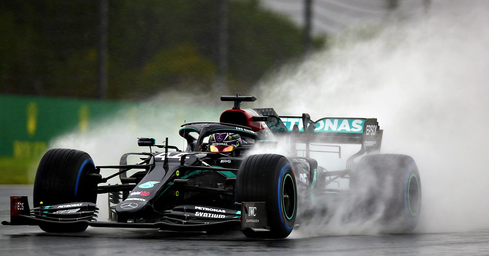

2020

Le più importanti scuderie che hanno partecipato al Campionato Mondiale di Formula1 2020 erano:
- Mercedes AMG
- Scuderia Ferrari
- McLaren F1 Team
- Red Bull Racing
Il mondiale di Formula1 2020 è stato vinto da Lewis Hamilton che si è aggiudicato la sua vittoria mondiale numero 7.
Alla fine dell' ultima tappa dai semafori della griglia di partenza sono decollati fuochi d'artificio
e c'è stata una grande festa dopo la premiazione della gara.
HOME
Tutti i diritti sono riservati
Sito realizzato da Boniotti Elisa, Lucchini Davide, Tassone Thomas